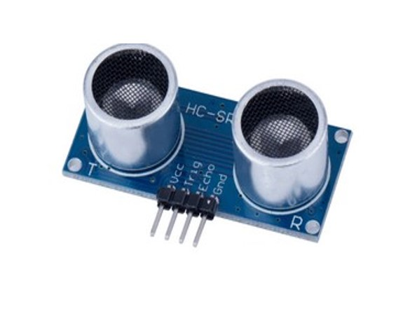
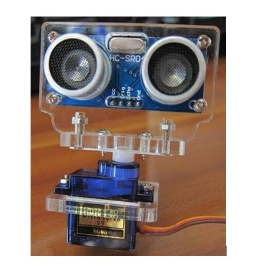
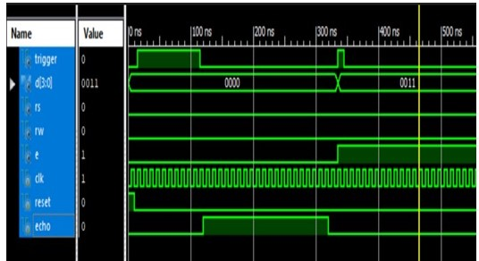
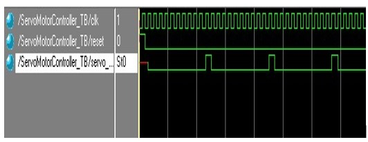

Ultrasonic Range Finder (FPGA · Spartan-3E)
I built a range finder on a Spartan-3 FPGA that measures distance with an HC-SR04 ultrasonic sensor and displays the result on an LCD. The design uses a state machine with counters to measure echo time, converts time-of-flight to distance, and includes a servo PWM add-on for scanning.
Project Overview
The top module triggers the ultrasonic sensor, times the echo pulse with cycle-accurate counters, converts elapsed time to distance, and updates an LCD. A separate PWM block drives a servo so the sensor can sweep an area for basic scanning and object detection.
Hardware
- FPGA: Xilinx Spartan-3E starter kit
- Sensor: HC-SR04 ultrasonic (Trig/Echo)
- Actuator: hobby servo (PWM control)
- Display: character LCD
- Tools: Xilinx ISE, ModelSim


System Architecture
- Idle: wait for measurement interval.
- Trigger: assert 10 µs pulse on
Trig. - Wait Echo: wait for
Echoto go high. - Measure: count clock cycles while
Echois high. - Compute: convert cycles → time → distance.
- Display: send digits/formatting to the LCD.
Distance Calculation
Using time-of-flight (τ) and speed of sound (≈340 m/s):
d = (τ · 340) / 2Verilog Modules
- ultrasonic_sensor: FSM for trigger/echo timing and distance register.
- lcd_driver: updates the character LCD with the measured value.
- servo_pwm: generates pulse widths for position control.
- top: integrates sensor, LCD, and servo blocks.
Servo Add-On (PWM)
A lightweight PWM controller varies pulse width to set servo angle. Threshold values can be updated to sweep or lock at a set point, enabling simple area scans.
Simulation Results


Applications
- Mobile robots: obstacle detection and avoidance
- Fixed installations: distance monitoring and presence sensing
- Scanning rigs: simple 2D sweeps with the servo mount
Tech Stack
- Verilog HDL · Xilinx ISE · ModelSim
- Spartan-3E Starter Kit · HC-SR04 · Character LCD
Outcome
The design performs continuous distance measurement with stable LCD updates and verified timing in simulation. Adding the servo PWM extends it into a basic scanning rangefinder suitable for labs and robotics demos.